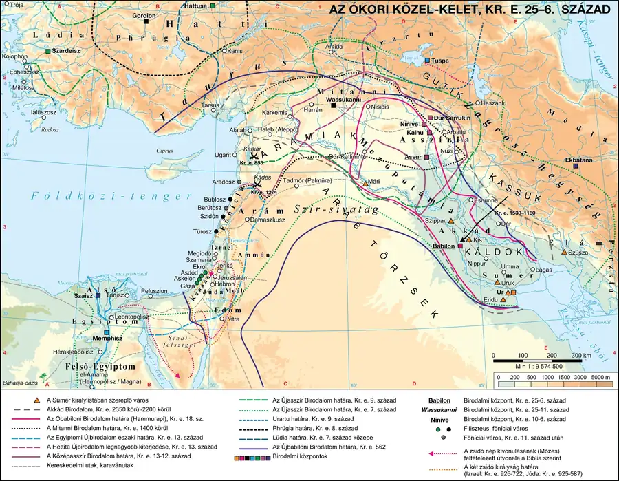
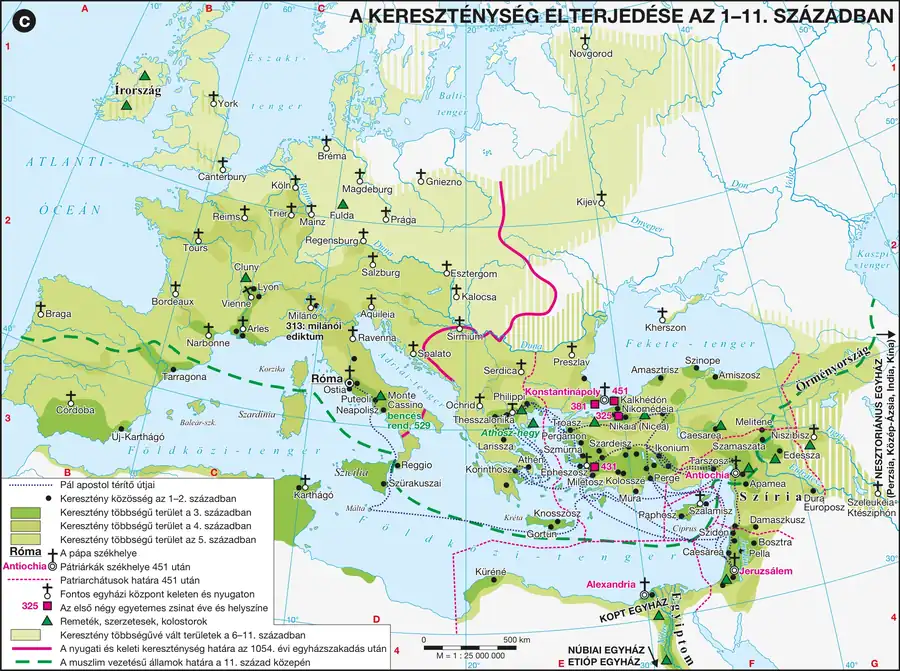

A zsidóság története és a monoteizmus kialakulása
Be tudod mutatni a zsidó törzsek Kánaánba telepedését, az Izraeli Királyság történetét, és el tudod magyarázni, hogyan alakult ki fokozatosan a tiszta monoteizmus.
Kánaán és a zsidóság betelepülése
Kánaán a Jordán folyó, a Holt-tenger és a Földközi-tenger közötti hegyes vidék — a zsidó hagyomány „ígéret földjének” nevezi, a rómaiak korában pedig Palesztinának hívták (a filiszteusok — paleszetek — földjéről). A terület Kr. e. kb. XV–XIV. századtól két hullámban népesült be sémi eredetű zsidó törzsekkel: keletről érkeztek az első csoportok — róluk szól Ábrahám története —, majd Kr. e. XIII. században nyugat felől, Egyiptomból érkeztek Mózes vezetésével a héber törzsek. A 12 törzs itt szövetséget kötött, és legyőzte a helyi lakosságot.
Az Ószövetség szerint Ábrahám Mezopotámiában, Ur városában élt; az Úr parancsára Kánaán felé indult. Fia Izsák, annak fia Jákob (Izrael) lett a zsidó törzs atyja — Jákob 12 fia jelképezi a 12 zsidó törzset. Az éhínség elől Jákob fiai Egyiptomba vándoroltak, ahol a zsidók előbb békében sokasodtak, majd az egyiptomiak szembefordultak velük. Az egyik megmentett gyermeket, Mózest — akit a fáraó lánya nevelt fel — a Sínai-félszigeten szólította meg Jahve az égő csipkebokorból, és bízta meg népe kivezetésével. Mózes a sivatagban kapta Istentől a tízparancsolatot.
Az Izraeli Királyság és a monoteizmus fokozatos kialakulása
A betelepülő zsidó törzsek évszázados küzdelemben győzték le Kánaán lakosságát és a filiszteusokat. A folytonos háborúskodás kovácsolta össze a hébereket: Saul (Kr. e. 1020 körül) központosította először a hatalmat, utóda Dávid (Kr. e. 1010–970) egyesítette Júdeát és Izraelt, székhelyévé Jeruzsálemet tette. Fia, Salamon (Kr. e. 970–930) megerősítette a királyságot, és felépíttette az első jeruzsálemi templomot Jahve tiszteletére.
Salamon halála után az ország kettészakadt (Izrael és Júda). A tömegek életkörülményei romlottak, sokan más népek szokásait, kultuszait vették át. A helyzetre a próféták (Isten által elhívott, akaratát közvetítő személyek) figyelmeztették a népet, és követelték a Jahvéhoz való visszatérést. Kr. e. 722-ben az Újasszír Birodalom elfoglalta Izraelt, Kr. e. 587-ben pedig az Újbabiloni Birodalom uralkodója elfoglalta Jeruzsálemet, leromboltatta a templomot, és a lakosság egy részét Mezopotámiába hurcolta („babiloni fogság”).
A monoteizmus (egyistenhit) nem egy csapásra, hanem fokozatosan alakult ki: a Kr. e. VIII. századig Jahve mellett időszakosan más isteneket is tiszteltek; az egységes királyság szétesése után a próféták nyomán a zsidóság szakított az idegen kultuszokkal; végül éppen a babiloni fogság idején vált Jahve a zsidók fölött uralkodó egyetlen istenségből a mindenség teremtőjévé, a világ egyetlen istenévé — ekkor lett a zsidó hit tisztán egyistenhívő vallássá. A fogságból hazatérők újjáépítették a jeruzsálemi templomot.
A monoteizmus kialakulásának három lépcsőjét érdemes megjegyezni: 1) más istenek időszakos tisztelete Jahve mellett → 2) a próféták fellépése után Jahve az egyetlen tisztelt isten → 3) a babiloni fogság idején Jahve a világ egyetlen létező istenévé válik. Ez a fokozatosság — nem egyszeri fordulat — gyakori vizsgakérdés.
Kötelező adatok
| Fogalmak | Személyek, évszámok | Topográfia |
|---|---|---|
| zsidó vallás, Ószövetség/Héber Biblia, Tízparancsolat, próféta, jeruzsálemi templom, diaszpóra, Messiás | Ábrahám, Mózes, Dávid, Salamon Kr. e. 587: Jeruzsálem eleste, babiloni fogság kezdete |
Jeruzsálem, Kánaán, Júdea, Izrael, Palesztina |
1. forrás
Az ókori Közel-Kelet, Kr. e. 25–6. század
Kánaán, Izrael és Júda helyét, valamint a térség nagyhatalmi környezetét mutatja.

A parancsok kimondják: ne legyen más istened rajtam kívül; ne csinálj magadnak faragott képet, hogy azt imádd; az Úr nevét hiába ne vedd; a nyugalom napját szenteld meg; tiszteld apádat és anyádat; ne ölj; ne paráználkodj; ne lopj; ne tanúskodj hamisan felebarátod ellen; és ne kívánd embertársad házát, feleségét vagy javait.
- Csoportosítsa a parancsokat: melyek vonatkoznak kifejezetten a vallási életre, és melyek fogalmaznak meg általános etikai elveket?
- Melyik parancs fejezi ki legvilágosabban a monoteizmus elvét? Idézze a megfelelő részt!
- Milyen forrásban maradt fenn a tízparancsolat, és Mózes története szerint mikor és hol kapta Isten kőtábláit?
Ellenőrző feladatok
A zsidó vallás tanai és gyakorlata
Ismered a zsidó vallás alapvető szent szövegeit (Tóra, Talmud), a szövetség fogalmát, a vallási élet kereteit, valamint a diaszpóra kialakulását és jelentőségét.
Szövetség, Tóra, Talmud
A zsidó vallásban Jahve és a zsidóság kapcsolata kölcsönös és kizárólagos: nemcsak a nép egyetlen istene Jahve, hanem Izrael is Isten választott népe, amellyel Isten szövetséget kötött, és amelynek törvényt adott. Ez a törvény a Tóra, Mózes öt könyve — a vallási élet irányítója, amelynek legfontosabb törvénycsoportja a tízparancsolat. A zsidó vallás forrása a 24 könyvből álló Szentírás, amely azonos tartalmú a keresztény Biblia 39 ószövetségi iratával (a felosztás eltér).
Az idők során felhalmozott hagyományt — a Tóra magyarázatát, tudósok és tanítók (rabbik) nézeteit — összegyűjtötték és megszerkesztették: ez a Talmud („tanítás”). A legismertebb változat a babilóniai Talmud, amely tizenkét kötetben, egyenként mintegy 600 oldalon rögzíti a hagyományt.
Vallási élet és a diaszpóra
Kr. u. 70-ben a rómaiak leverték a zsidó felkelést, és lerombolták a jeruzsálemi templomot — azóta nem épült újjá. Ettől kezdve a zsinagóga lett az ima- és olvasógyülekezeti hely, amelyben központi helyen áll a Tóra-tartó szekrény. A szombat nyugalomnap, ekkor tilos a munka. A nagy ünnepek: Pészah (húsvét, az Egyiptomból való kivonulás emlékére), a Hetek Ünnepe (aratási hálaünnep), a Sátoros ünnep (a pusztai vándorlás emlékére), az Újév és a Jóm Kippur (a nagy engesztelési nap). Jelképei a Dávid-csillag és a hétkarú lámpás (menóra).
A zsidók szétszóródása, a diaszpóra már a Kr. e. VI. században (a babiloni fogsággal) megkezdődött, és a rómaiak elleni felkelések leverése (Kr. u. 70, majd a későbbi felkelések) után öltött nagyobb méreteket. Jelentős zsidó közösségek jöttek létre a hellenisztikus világ városaiban — a legnagyobb Alexandriában, ahol több mint százezres zsidó népcsoport élt. A hellenizált zsidók megőrizték egyistenhitüket, de a Biblia elbeszéléseit már gyakran jelképesen értelmezték, és a Biblia görög fordítása (a Septuaginta) megismertette a hellenisztikus világgal a zsidó vallás alapvető gondolatait — ez fontos előzménye a kereszténység terjedésének.
EA hellenizált palesztinai zsidóságon belül több vallási csoportosulás (szekta) is létezett: a szadduceusok nem tartották fontosnak a Mózes utáni dogmákat; a farizeusok a hagyományokhoz és törvényekhez betű szerint ragaszkodtak; az esszénusok a társadalomtól és a politikától elfordulva, Messiás-váró szerzetesi közösséget alkottak — a kereszténység gyökereit részben az esszénus gondolatvilágban lehet keresni.
Kötelező adatok
| Fogalmak | Évszámok | Emelt szinten |
|---|---|---|
| diaszpóra, Messiás | Kr. u. 70: Jeruzsálem és a templom lerombolása | Ezsinagóga |
2. forrás
A szerző leírja, hogy a rómaiak elleni felkelés leverése után a hadvezér elfoglalta Jeruzsálemet, és a templomot felgyújtatta, majd a lakosság nagy részét fogságba hurcolta vagy szétszórta a birodalom más tartományaiba. A templom aranykincseit Rómába vitték, ahol a győzelmi diadalmenetben mutatták be azokat a népnek.
- Melyik évben és milyen esemény következtében pusztult el a jeruzsálemi templom másodszor?
- Milyen hosszú távú következménye lett a zsidóság számára a lakosság szétszóratásának? Nevezze meg a jelenség szakkifejezését!
- Milyen intézmény vette át a templom vallási szerepét a szétszóródott közösségekben?
Ellenőrző feladatok
A kereszténység születése — Jézus élete és tanításai
Be tudod mutatni a kereszténység születésének társadalmi-vallási körülményeit, Jézus életének főbb állomásait, valamint tanításainak lényegét és újdonságát a korábbi felfogásokhoz képest.
A messiásváró légkör
A Kr. e. I. században a zsidók lakta terület a Római Birodalom fennhatósága alá került. A rómaiak több, velük együttműködő királyságot alakítottak ki — ezt a nép jelentős része árulásnak tekintette. Az egyistenhívő zsidóság régóta várta a Messiást (héberül „fölkent”, görögül Khrisztosz — innen Krisztus), aki megszabadítja az országot elnyomóitól. Ebben a felfokozott várakozásban lépett fel Keresztelő János, aki a Megváltó közeli eljövetelét hirdette, és bűnbánatra intette a népet — követőit megkeresztelte a Jordán folyó vizében. Mivel tömegek hallgatták, veszélyessé vált a hatalom számára, ezért kivégeztette Galilea uralkodója.
Jézus élete és működése
Jézus Krisztus történelmi személy volt: a júdeai Betlehemben született (a pontos időpont bizonytalan, Kr. e. 8–4 közé tehető), gyermek- és ifjúkorát a galileai Názáretben töltötte. Mintegy 30 éves korában kezdte meg működését; Keresztelő János keresztelte meg. Jézus tanítványaival, az apostolokkal, Júdea városait járta, és a közelgő végítéletet hirdette — de tanítása szerint nem a szertartások és tilalmak betartása, hanem az Istenhez méltó élet vezet üdvösséghez. Tanításának lényege a szeretet Isten és az embertársak iránt; ostorozta a vagyonszerzést, a kapzsiságot, a gyűlöletet, az erőszakot és a bosszút — hiszen megbocsátás nélkül nincs szeretet.
Jézus életének eseményeit halála után jegyezték le: ezek az evangéliumok (jelentése: örömhír), amelyek közül négyet (Máté, Márk, Lukács, János) az egyház hitelesnek ismert el, és bekerültek a keresztények szent könyvébe, az Újszövetségbe. Jézus tanításai szembekerültek a zsidó főpapokkal, mert nem a szertartásos vallásosságot, hanem a belső megtérést tartotta üdvözítőnek. Elfogatása előtti estén búcsúzott tanítványaitól: az ekkor mondottakon alapul a keresztény egyházak hitéletében központi szentségnek számító úrvacsora (eucharisztia). Júdea helytartója, Pontius Pilátus a zsidó főpapság kérésére keresztre feszíttette.
Jézus tanítása azért hatott forradalmian, mert az üdvözülés feltételét áthelyezte a külső cselekedetekről (szertartások, tilalmak betartása) a belső tisztaságra és a szeretetre. Ez a fordulat magyarázza, miért éppen ez a tanítás szólította meg a hellenizált világ vallási élményre vágyó emberét — ez az összefüggés hidat épít a 3. és a 4. modul között.
Kötelező adatok
| Fogalmak | Személyek | Kronológia |
|---|---|---|
| keresztény vallás, keresztség és úrvacsora, apostol, misszió, Biblia, Újszövetség, evangélium | Jézus, Mária, József, Szent Péter és Szent Pál apostolok | a keresztény időszámítás kezdete (Kr. e. és Kr. u.) |
3. forrás
Jézus tanítja a sokaságot: boldogok a lelki szegények, mert övék a mennyek országa; boldogok, akik sírnak, mert megvigasztaltatnak; boldogok a szelídek, a békességre igyekvők és akik éhezik-szomjazzák az igazságot. Azt mondja továbbá: hallottátok, hogy megmondatott, szemet szemért, fogat fogért — én pedig azt mondom nektek, ne álljatok ellent a gonosznak, és szeressétek ellenségeiteket, hiszen ha csak azokat szeretitek, akik titeket szeretnek, mi jutalmatok van?
- Milyen emberi tulajdonságokat nevez boldognak Jézus a forrás szerint?
- Melyik ószövetségi elvet állítja szembe Jézus saját tanításával? Miben áll a különbség?
- Milyen erkölcsi tulajdonságok hiányoznak a görög–római felfogásból, amelyeket Jézus tanítása fontosnak tart?
Ellenőrző feladatok
A páli fordulat és az egyház kialakulása
Be tudod mutatni Péter és Pál apostol szerepét, a páli fordulat lényegét, az egyházi hierarchia kialakulását és a keresztényüldözések okait, körülményeit.
Péter és az első közösség
Kereszthalála után Jézus tanításai nem haltak el: követőiből Jeruzsálemben kis közösség alakult ki. Az új hitet vallók — akiket csak később neveztek keresztényeknek — folytatták mesterük munkáját. A kereszténység kezdetben a zsidó diaszpóra közösségeiben terjedt. Az apostolok közül az első Péter volt (eredeti nevén Simon); Jézus nevezte el Péternek (görögül „kőszikla”). Péter élete végéig hirdette az igét, Rómába ment, és haláláig (Kr. u. 67) Róma püspökeként tevékenykedett — a katolikus felfogás szerint a pápák Péter utódai e méltóságban.
A páli fordulat
Az új vallás megerősödése és elterjedése jelentős részben Pál apostol nevéhez fűződik. Pál (eredeti nevén Saul) a diaszpóra zsidóságából származott, a kis-ázsiai Tarsus városában született római polgárként, farizeus neveltetést kapott, és kezdetben esküdt ellensége volt a kereszténységnek. A Damaszkusz felé vezető úton azonban — a hagyomány szerint csodás körülmények között — keresztény hitre tért (páli fordulat).
Pál azt hirdette, hogy nincs értelme a közeli végítéletre várni, mert a megváltás Krisztus kereszthalálával már megtörtént: aki hisz Jézusban, üdvözül. El kell fogadni a világ rendjét, a hatalom és a gazdagok létezését is — a vagyonosok is üdvözülhetnek, ha Jézus tanításai szerint élnek. Ezzel megnyílt az út a felső társadalmi rétegek felé is. Pál másik alapvető tanítása, hogy Isten nem csak a zsidóké: minden nép testvér a megváltásban, hiszen Krisztus mindenkit megváltott. Kr. u. 48-ban egy jeruzsálemi tanácskozáson (zsinaton) az apostolok és a presbiterek a pogány, nem zsidó származású keresztényeket is elismerték az egyház teljes jogú tagjának — ezzel a kereszténység elvált a zsidóságtól, és egybeolvadt a görög-római kultúrával.
Pál missziói (térítőútjai) nyomán sorra jöttek létre keresztény közösségek Cipruson, Kis-Ázsiában, Egyiptomban, Szíriában. A szíriai Antiochiában nevezték először a gyülekezet tagjai magukat keresztényeknek (Krisztus-követőknek).
Az egyházi hierarchia kialakulása
A kis, elzárt közösségek helyébe fokozatosan népes gyülekezetek léptek. A hívek vagyonuk egy részét a közösségeknek adták, amelyekből az elesetteket támogatták. Kialakultak az állandó tisztségek: az episzkoposz (püspök, görögül „felügyelő”) eredetileg a közösség pénzügyeit intézte, majd a hitéletet és a szertartásokat irányító személlyé vált; minden városi közösség élén egy püspök állt. A diakónosz (szolga) eredetileg a szeretetlakomák felszolgálója, később a papok segítője lett. A presbiterek (idősebbek) a közösség tekintélyes tagjaiból alakult, fokozatosan a világiaktól (laikusoktól) elkülönülő papság (klérus) magját alkották. Ez a szerkezet a keresztény egyházi hierarchia (szent uralom) alapja.
Üldözések
Az államhatalom kezdetben nem szállt szembe a kereszténységgel, ahogy türelmes volt a birodalom más vallásaival is, amíg azok nem sértették érdekeit. A keresztények azonban csak saját istenüket tisztelhették, ezért heves ellenállásba ütközött körükben a császár istenítése. Néró szeszélyes gyilkos akciói mellett az első nagy állami szintű keresztényüldözésre a Kr. u. III. században került sor, a legsúlyosabb Diocletianus császár idején (Kr. u. 303), aki törvényileg fosztotta meg a keresztényeket szabadságuktól és szavazati joguktól. Az üldözöttek — a vértanúk (mártírok) — helytállása fokozatosan megváltoztatta a lakosság viszonyát a kereszténységhez: az ellenszenv részvétbe fordult.
Kötelező adatok
| Fogalmak | Személyek | Kronológia |
|---|---|---|
| püspök, zsinat | Szent Péter és Szent Pál apostolok | Kr. u. 48: jeruzsálemi zsinat Kr. u. 303: Diocletianus keresztényüldözése |
4. forrás
A kereszténység elterjedése az 1–11. században
A kereszténység térbeli terjedése és fontosabb központjai követhetők rajta.

Pál írja: nincs többé zsidó és görög, szolga és szabad, férfi és nő, mert mindnyájan egyek vagytok Krisztusban. Aki hatalommal bír, azt Istentől kapta, ezért engedelmeskedjetek a felsőbbségnek, ne saját érdekből, hanem lelkiismeretből. A szeretet a törvény betöltése: ha valaki mindent tud, de szeretete nincsen, semmit sem ér.
- Milyen társadalmi csoportok közötti különbséget old fel Pál a forrás szerint?
- Milyen magatartásra inti Pál a híveket a világi hatalommal szemben? Milyen jelentősége volt ennek az álláspontnak a kereszténység elterjedésére nézve?
- Mit tart Pál a legfontosabb kereszténynek nevezhető erénynek?
Ellenőrző feladatok
Államvallássá válás és a dogmák tisztázása
Be tudod mutatni Constantinus és Theodosius rendeleteinek jelentőségét, a niceai zsinat vitáját, és el tudod magyarázni, milyen politikai megfontolások álltak a kereszténység államvallássá tétele mögött.
Constantinus és a milánói ediktum
A Kr. u. III–IV. század tengernyi szenvedést hozott a birodalom lakóinak: megszűnt a létbiztonság, romlottak az életkörülmények, az állami irányítás egyre diktatórikusabbá vált. Az emberek tömegesen fordultak a keleti kultuszok (Mithrasz, Ízisz) és a kereszténység felé, mert mélyebb vallási élményre és bensőséges közösségre vágytak — miközben a hagyományos görög–római vallás csupán szertartási részvételt követelt, vigaszt nem nyújtott.
A keresztényüldözés értelmetlenné vált, hiszen a kereszténység már jelen volt a társadalom minden rétegében. Constantinus császár (Kr. u. 306–337) ezért igyekezett megbékíteni a birodalom keresztény lakosságát: 313-ban, Milánóban kiadott rendeletével (edictumával) a keresztényeknek is biztosította a szabad vallásgyakorlást, és visszaadta elkobzott javaikat. Lépése egyúttal a császári hatalom megerősítését is szolgálta — a kereszténység mindinkább a birodalom összekötő kapcsává vált.
A niceai zsinat és a dogmák tisztázása
A keresztény közösségek között a hitelvek (dogmák) kérdésében éles viták támadtak. A leghevesebb vita a Szentháromság (Atya, Fiú, Szentlélek) értelmezéséről folyt: Athanasius alexandriai főpap az egylényegűséget vallotta — az Atya, a Fiú és a Szentlélek egyazon Isten három megnyilvánulási formája —, míg Arius presbiter és hívei (ariánusok) Jézust a legmagasabb rendű teremtménynek, de nem Istennek tartották.
A birodalom kormányozhatósága érdekében Constantinus egységre törekedett: 325-ben összehívta az első egyetemes zsinatot Niceában, ahol több száz püspök részvételével — s a császár akaratának érvényesülésével — mindenkire kötelező dogmaként fogadták el az egylényegűség tanát: az Atya, a Fiú és a Szentlélek azonos Istennel. A zsinat rendelkezéseit megtagadókat eretneknek nyilvánították, és az államhatalom erejével igyekeztek visszaszorítani őket.
A kereszténység államvallássá válása
Constantinust követően a kereszténység nemcsak egyenlővé vált a többi kultusszal, hanem élvezte az állam támogatását is. Kr. u. 391-ben Nagy Theodosius, az egységes Római Birodalom utolsó császára államvallássá tette a kereszténységet. Minden más vallást üldözendőnek nyilvánított, bezáratta a „pogány” szentélyeket, elkobozta vagyonukat. Erre a sorsra jutottak az olümpiai játékok (Kr. u. 393) és — jóval később — az athéni Akadémia is (Kr. u. 529).
EA Kr. u. IV. századra az egyház intézménnyé vált, ami sokakban igényt támadt az őskeresztény elvek és az egyszerűbb életmód gyakorlása iránt: ez vezetett a szerzetesi mozgalom kialakulásához. Az egyiptomi sivatagba vonuló remeték (Szent Pál, Szent Antal) köré közösségek szerveződtek; az első szerzetesi szabályzatot (regulát) Szent Pakhomiosz állította össze a IV. században.
Kötelező adatok
| Fogalmak | Személyek | Kronológia |
|---|---|---|
| zsinat; Eállamvallás, dogma | Constantinus, Nagy Theodosius | 313: milánói rendelet 325: niceai zsinat 391: Theodosius államvallássá teszi a kereszténységet |
5. forrás
A zsinat kimondja: hiszünk egy Istenben, a mindenható Atyában; és egy Úrban, Jézus Krisztusban, az Isten egyszülött Fiában, aki az Atyától született minden idő előtt, Isten az Istentől, világosság a világosságtól, valóságos Isten a valóságos Istentől, született és nem teremtetett, az Atyával egylényegű. Aki pedig azt állítja, hogy volt idő, amikor a Fiú nem létezett, vagy hogy más lényegből való, mint az Atya — azt az egyetemes egyház kiközösíti.
- Milyen álláspontot fogalmaz meg a hitvallás Krisztus és az Atya viszonyáról?
- Kinek a nézetét utasítja el kifejezetten az utolsó mondat? Nevezze meg e nézet képviselőjét és követőit!
- Milyen politikai érdeke fűződött Constantinus császárnak ahhoz, hogy egységes hitvallást fogadtasson el?
Ellenőrző feladatok
Fogalomtár és kronológia
Fogalomtár — gépeld be, amit keresel
Kronológia
Topográfia — mit kell megmutatni az atlaszban?
- A zsidó történelem színterei: Kánaán/Palesztina, Jeruzsálem, Egyiptom, Babilon.
- Jézus életének helyszínei: Betlehem, Názáret, Galilea, Júdea.
- A kereszténység terjedésének állomásai: Tarsus, Antiochia (Szíria), Alexandria, Róma.
- Az államvallássá válás színterei: Konstantinápoly, Nicea (Kis-Ázsia).
Érettségi típusú komplex feladatok
A három feladat az írásbeli I. részének mintájára készült: forrásalapú, több részkérdésből áll, és részpontokra megy. Oldd meg papíron, majd nyisd meg a pontozott megoldást.
Három állapot: (A) Jahve mellett más isteneket is tisztelnek időszakosan; (B) a próféták fellépése után csak Jahvét ismerik el; (C) Jahve a világ egyetlen, mindenség feletti istenévé válik.
- Állítsa időrendi sorrendbe a három állapotot! (3 pont)
- Nevezze meg, mely történelmi esemény idején zajlott le a (C) állapothoz vezető változás! (2 pont)
- Nevezze meg a próféta szó jelentését, és fogalmazza meg egy mondatban a próféták szerepét! (3 pont)
- Nevezze meg azt a könyvet, amely ebben az időszakban nyerte el végleges formáját! (1 pont)
Jézus a végítéletet hirdette, és az üdvösséget az Istenhez méltó élethez kötötte. Pál szerint a megváltás Krisztus kereszthalálával már megtörtént, ezért aki hisz, üdvözül; a világ rendjét, a hatalmat el kell fogadni.
- Fogalmazza meg egy mondatban a különbséget Jézus és Pál üdvtana között! (2 pont)
- Milyen csoport felé nyílt meg az út Pál tanítása nyomán, amely korábban kevésbé volt nyitott a kereszténység felé? (2 pont)
- Nevezze meg azt az évet és eseményt, amikor a nem zsidó származású híveket is teljes jogúnak ismerték el! (2 pont)
- Magyarázza meg, milyen hatással volt ez a döntés a kereszténység és a görög-római kultúra viszonyára! (2 pont)
- Nevezze meg a milánói rendelet évét és kiadóját, valamint azt, mit biztosított a keresztényeknek! (3 pont)
- Nevezze meg a niceai zsinat évét, és fogalmazza meg egy mondatban a zsinaton elfogadott dogma lényegét! (3 pont)
- Nevezze meg, ki és mikor tette a kereszténységet államvallássá! (2 pont)
- ENevezze meg, milyen sorsra jutottak a „pogány” kultuszok és intézmények 391 után! Hozzon egy konkrét példát! (2 pont)
Esszéírás — szerkezet, minta, szószámláló
Fontos: ez a témakör mindig egyetemes
A zsidó monoteizmus és a kereszténység kialakulása egyetemes történelmi téma, ezért középszinten kizárólag a rövid esszében (100–130 szó) szerepelhet, a hosszú esszé ilyenkor magyar történelmi témát dolgoz fel. Emelt szinten bármelyik esszétípusban előfordulhat.
Kidolgozott rövid esszé
Mutassa be a források és ismeretei segítségével, milyen tényezők segítették a kereszténység gyors terjedését a Római Birodalomban! (rövid esszé, 100–130 szó)
Mintamegoldás · 124 szóA feladat a kereszténység I–IV. századi terjedésének okait kéri számon a Római Birodalomban. A III. századi válság idején a birodalom lakói létbizonytalanságban éltek, miközben a hagyományos görög–római vallás csak szertartási részvételt kívánt, mélyebb vigaszt nem nyújtott. Jézus tanítása ezzel szemben egyetemes szeretetet és megváltást ígért mindenkinek, társadalmi helyzettől függetlenül. Pál apostol tovább szélesítette a kört: a jeruzsálemi zsinat (Kr. u. 48) a nem zsidó híveket is teljes jogúnak ismerte el, így a hit egybeolvadt a görög-római kultúrával. A szervezett egyházi hierarchia (püspökök, presbiterek) stabilitást adott a közösségeknek. Az üldözések a várakozással ellentétben nem gyengítették, hanem — a vértanúk példáján keresztül — erősítették a mozgalom vonzerejét.
Miért működik? Az első mondat visszahangozza a feladatot. A válasz nem sorol, hanem ok-okozati láncot épít: válság → vallási igény → Jézus és Pál tanítása → szervezettség → az üldözés paradox hatása. A záró mondat értékel, nem ismétel.
Írd meg te — élő szószámlálóval
A szöveg csak ebben a böngészőablakban él — frissítéskor elvész.
Gyakorló esszétémák
- E1 — Mutassa be, hogyan alakult ki fokozatosan a zsidó monoteizmus! (rövid)
- E2 — Mutassa be Jézus tanításainak legfontosabb elemeit, és térjen ki a korábbi felfogásokhoz képesti újdonságukra! (rövid)
- E3 — Mutassa be Pál apostol szerepét a kereszténység elterjedésében! (rövid)
- E4 — Fejtse ki, milyen lépések vezettek a kereszténység államvallássá válásához! (rövid)
- EE5 — Hasonlítsa össze a zsidó és a keresztény vallás Isten-felfogását és üdvtanát! (komplex/összehasonlító)
Tételvázlatok és vizsgáztatói kérdések
A zsidó monoteizmus.
A válaszában térjen ki a zsidóság betelepülésére, az Izraeli Királyság történetére, és fejtse ki, hogyan alakult ki fokozatosan a tiszta egyistenhit! Használja a mellékelt forrásokat és az atlaszt!
| Perc | Rész | Tartalom |
|---|---|---|
| 0–2 | Bevezetés | Kánaán földrajzi elhelyezése, a betelepülés két hulláma (Ábrahám, majd Mózes). |
| 2–7 | Az Izraeli Királyság | Saul, Dávid, Salamon; az ország kettészakadása, a próféták fellépése. Forrás: tízparancsolat. |
| 7–11 | A monoteizmus kialakulása | A három lépcső: időszakos politeizmus → Jahve kizárólagossága → a babiloni fogság és a világ egyetlen istene. |
| 11–15 | Vallási élet, zárás | Tóra, Talmud, zsinagóga, diaszpóra. Zárás: a monoteizmus fokozatos, nem egyszeri fordulat. |
A kereszténység kialakulása, tanai, elterjedése.
A válaszában térjen ki Jézus életére és tanításaira, Pál apostol szerepére, valamint a kereszténység államvallássá válására! Használja a mellékelt forrásokat és az atlaszt!
| Perc | Rész | Tartalom |
|---|---|---|
| 0–2 | Bevezetés | A messiásváró légkör, Keresztelő János, Palesztina római uralom alatt. |
| 2–6 | Jézus élete és tanításai | Betlehem, Názáret, apostolok, kereszthalál. Forrás: a hegyi beszéd. |
| 6–10 | Pál és az egyház | Páli fordulat, jeruzsálemi zsinat (48), egyházi hierarchia, üldözések. Forrás: Pál-levél. |
| 10–15 | Államvallás, zárás | Milánói rendelet (313), niceai zsinat (325), Theodosius (391). Atlasz: Konstantinápoly, Nicea. Zárás: üldözött szektából államvallás négy évszázad alatt. |
Várható vizsgáztatói kérdések
- Miért nem egyszerre, hanem fokozatosan alakult ki a zsidó monoteizmus?
- Mi a különbség a Tóra és a Talmud között?
- Miben tér el Jézus üdvtana a korábbi zsidó felfogástól?
- Miért volt fordulópont a jeruzsálemi zsinat (Kr. u. 48) a kereszténység történetében?
- Milyen politikai megfontolás állt Constantinus milánói rendelete mögött?
- EMi volt a vitatéma Arius és Athanasius között a niceai zsinaton?
Tíz érettségi tipp ehhez a témakörhöz
- A monoteizmus fokozatosan alakult ki. Ne írj úgy, mintha a zsidók mindig is szigorúan egyistenhívők lettek volna — a három lépcsős folyamat (politeizmus → kizárólagosság → egyetemes monoteizmus) pontos ismerete plusz pontot ér.
- Ez a témakör mindig egyetemes. Középszinten csakis a rövid esszében szerepelhet — mindkét altéma (zsidó vallás, kereszténység) egyaránt kérdezhető.
- Vigyázz a Tóra–Talmud különbségre! A Tóra Mózes öt könyve, isteni eredetű törvény; a Talmud az emberi (rabbinikus) magyarázatok gyűjteménye.
- A forrás nem díszlet. Minden esszében legalább kétszer hivatkozz rá konkrétan — a forráshasználat a szóbelin 12 pontot ér.
- Kösd össze Jézus és Pál tanítását, de ne mosd össze őket! Jézus az Istenhez méltó életet, Pál a hitet állítja az üdvösség középpontjába — ez a legfontosabb csapda a témakörben.
- Az évszámokat kösd eseményhez. Kr. u. 48 (jeruzsálemi zsinat), 70 (a templom lerombolása), 313 (milánói rendelet), 325 (niceai zsinat), 391 (államvallás) — ezek önmagukban is kérdezhetők.
- Ne feledkezz meg az üldözésekről! A vértanúk szerepe paradox: az üldözés hosszú távon inkább erősítette, mint gyengítette a kereszténységet — ez jó értékelő zárómondat.
- Vigyázz a hasonló fogalompárokra! Ószövetség ≠ Újszövetség · zsinagóga ≠ jeruzsálemi templom · püspök (episzkoposz) ≠ presbiter · dogma ≠ eretnekség.
- Politikai szemmel is nézd a vallástörténetet! Constantinus és Theodosius döntései mögött is hatalmi megfontolás állt (egység, ellenőrzés) — ez a „történelmi gondolkodás” szempontnál hoz pontot.
- Gyakorolj időre. A rövid esszére 25–30 perc jusson; a szóbeli 30 perces felkészülési idejében készíts a fenti perc-beosztást követő vázlatot.